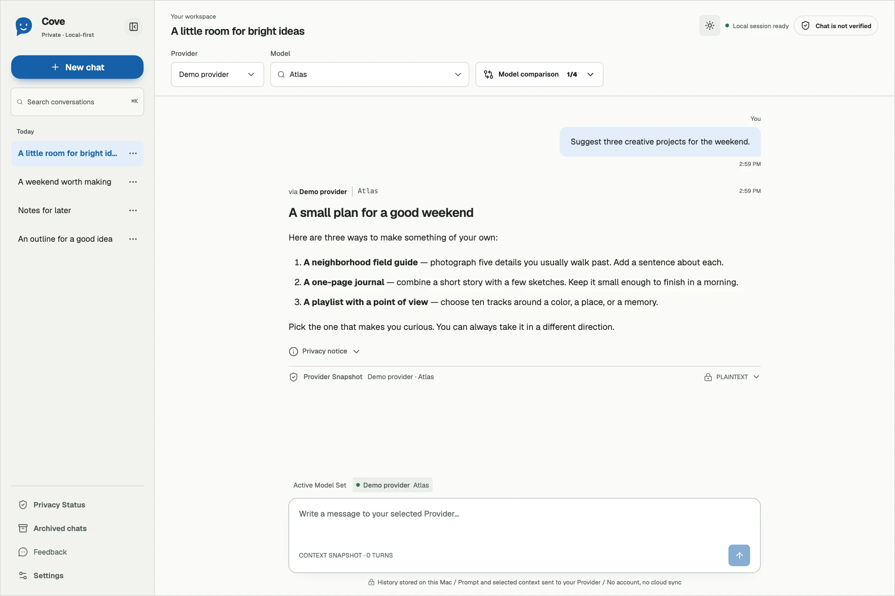
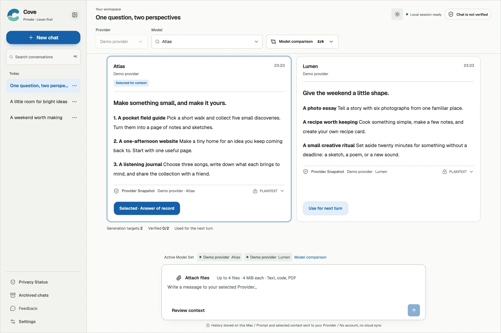

Kept on your Mac.
Conversation history and settings stay on your device. Provider keys use macOS Keychain by default. There is no Cove account or Cove cloud conversation store.
Local historyKeychain credentialsMarkdown & JSON exports
Bring your models together, compare their answers, and keep your conversations on your Mac.
0.1.0-beta.1 · Apple Silicon · macOS 13 or later

The actual Cove workspace. Sample prompts and simulated model replies. Open full preview ↗
A local workspace, always close by
Compare up to four models
No Cove account or cloud sync
A little perspective goes a long way
Different models bring different ideas. Send a prompt to up to four models, read their answers side by side, and choose where to go next.

A space that feels like you
Four workspace skins, each with light and dark appearances. Familiar tools, with a little room for personality.
Continuum — a neutral canvas with blue accents. Actual interface, sample content.
Keep the important things close
A little clarity about where your conversations live, and where your words go.
Conversation history and settings stay on your device. Provider keys use macOS Keychain by default. There is no Cove account or Cove cloud conversation store.
Prompts and selected context go to the provider you choose. Each response records its provider and configuration, with verification evidence when supported.
Local-first describes storage. Model execution happens with your selected provider. Cove does not encrypt its local history database. Read the privacy model ↗
Cove for Mac · Public beta 0.1.0-beta.1
Apple Silicon · macOS 13+ · 12.3 MB
A few useful details
A little more about the beta, your models, and your data.
Have another question? ↗The beta supports Apple Silicon Macs running macOS 13 or later. Intel Macs are not supported by this package. The menu-bar Launcher opens Cove's local chat workspace in your browser.
No. Cove has no account or cloud conversation store. You configure your own model provider and API key; provider access, pricing, and availability depend on that service.
Cove stores history locally and connects to your configured providers. Inference happens wherever the selected provider runs. Local storage does not imply local model execution.
Supported NearAI models can use browser-side encryption and hardware attestation. Evidence is shown per response and support varies by model. Ordinary HTTPS does not by itself prove confidential model execution. The NearAI preset currently uses its staging service.
Download beta updates from GitHub Releases. Cove's Check for Updates action follows the stable channel, which becomes available with the first stable release. Features and behavior may change during beta testing.